Official training sample only. Source boxes are unverified and may contain context or object groups. Coverage is not classification accuracy. Green boxes are proposals, not detections. No output cap.
| method | mean_candidates | coverage_iou_03 | coverage_iou_05 | coverage_iou_07 | lost_baseline_boxes |
|---|---|---|---|---|---|
| blocks_raw | 1531.833 | 0.548 | 0.356 | 0.178 | 0 |
| blocks_dedup_0.9 | 1446.167 | 0.548 | 0.356 | 0.178 | 0 |
| blocks_dedup_0.8 | 1329.417 | 0.548 | 0.356 | 0.178 | 0 |
| blocks_medium | 681.083 | 0.425 | 0.315 | 0.137 | 3 |
| blocks_coarse | 300.667 | 0.315 | 0.192 | 0.068 | 12 |
| windows_small_0.5 | 97008.250 | 0.562 | 0.425 | 0.068 | 6 |
| windows_balanced_0.5 | 98702.417 | 0.630 | 0.507 | 0.082 | 3 |
| windows_balanced_0.75 | 44249.083 | 0.603 | 0.247 | 0.027 | 14 |
| windows_context_0.75 | 11837.333 | 0.356 | 0.110 | 0.014 | 20 |
Fewest candidates preserving every baseline-covered box in this sample: blocks_dedup_0.8. This is not a universal optimal window size.
Block activity uses local color fraction; sliding-window gating uses whole-window color fraction. Thus generator comparisons change more than size alone. Within sliding-window methods the same gate and aspect bank are used.
Diagnosis: Conservative deduplication reduces mean candidates by 5.6% with no lost baseline-covered boxes here. IoU 0.80 reduces 13.2%. Larger blocks lose detail; full-image windows admit colored background and produce far too many candidates. Full-image sliding windows are a comparison, not the production default. Next: anchor local window searches to color regions. See README for limitations and measured analysis.
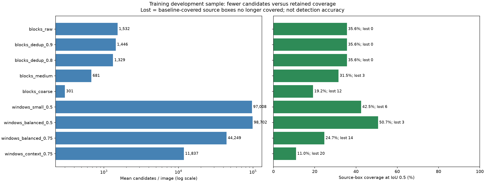
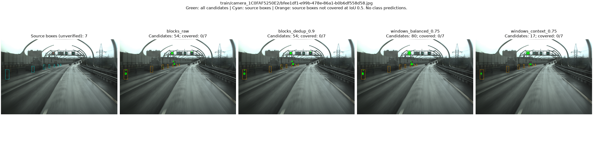
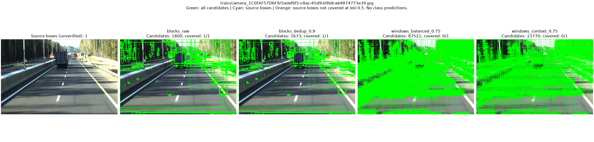
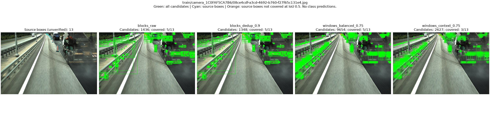
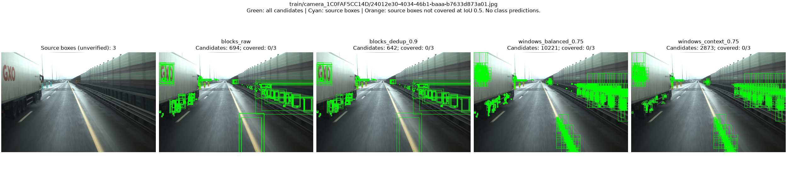
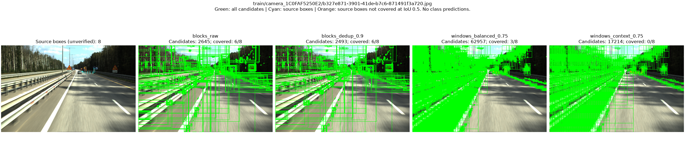
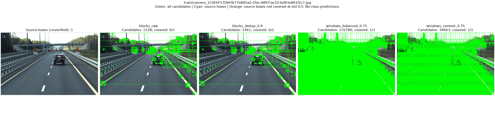
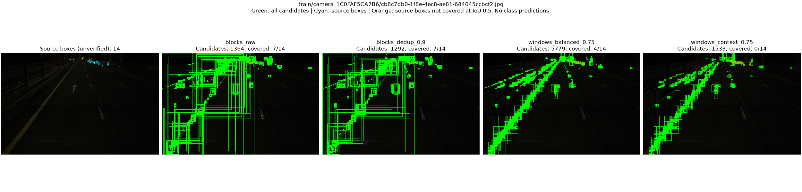
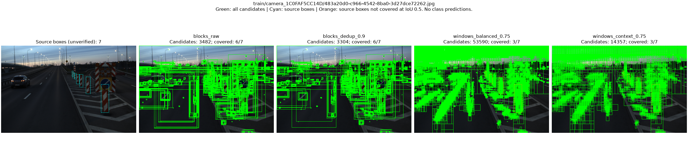
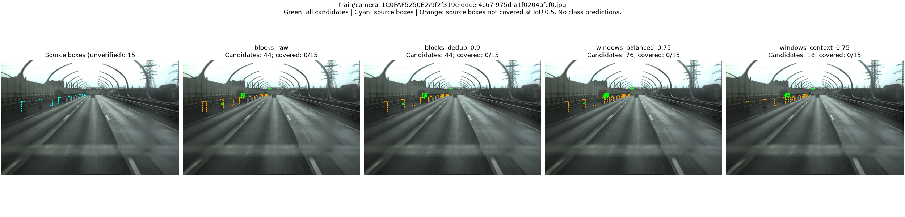
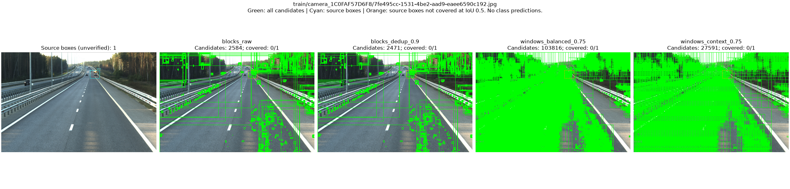
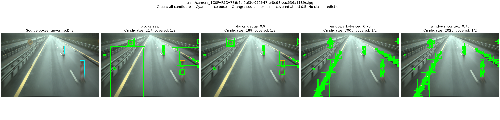
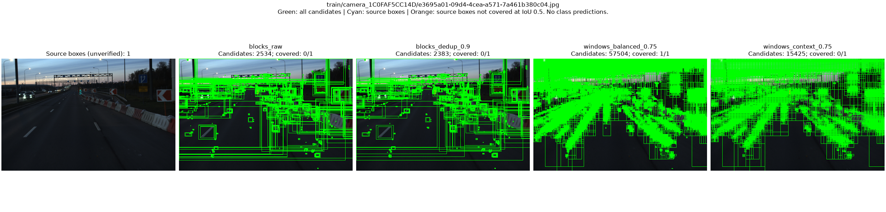